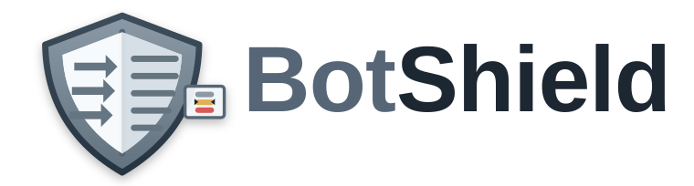

Documentation
Project README
Repository README — project overview, build instructions, and dev configuration.
On this page

Disciplined Judgment. Proportionate Response.


Adaptive bot mitigation for the Apache HTTP Server, running in production.
BotShield scores requests, tracks short-term reputation, and decides whether to pass, challenge, slow down, or block before application code has to absorb the traffic. Development is driven by that deployment: most changes trace back to something measured on real traffic — a scanner swarm, a lockout, a metric that didn't answer the question an incident needed — rather than to a feature list decided in advance.
Status: in production, still hardening. The core pipeline
(scoring, tiers, cookies, policy, observability) is stable and load-bearing.
Newer surfaces — the interactive/captcha tiers, the load-shedding
ladder — are earlier in that same real-traffic exercise and change
faster. Architecture, threat model, and per-extension design notes
live in DESIGN.md. Site handbook lives in docs/ and
renders to GitHub Pages via gh-pages/; see the
documentation index below.
What ships
- Tiered challenges. Pass / noninteractive (auto-submitted proof of work) / interactive (checkbox widget) / captcha (third-party provider) — Turnstile, hCaptcha, reCAPTCHA v2 + v3, Friendly Captcha, GeeTest v4. Per-scope configurable.
- Signed cookie reputation. An encrypted, tamper-evident cookie carries score and pass history across requests. No scoring threshold is defined out of the box — a fresh deployment enforces nothing until an operator declares one, so what's live always matches what's in the config.
- Sparse server state. Shared-memory flagged-IP table and Bloom filter for first-sight signals, both crash-durable across restarts.
- Policy. Trigger families (path / cookie / env / load / scope / flag) with a shared action grammar, per-cohort rate limits, a built-in robots.txt parser, and an anti-loop safeguard that breaks a client out of a challenge cycle it can't complete.
- Observability. A structured decision log, 96 Prometheus metrics, and an operator dashboard — all closed by default and opened only to addresses a directive names.
- Multi-vhost isolation. Reputation is isolated per
ServerNameby default; opt into sharing across vhosts explicitly. - Log-only / shadow mode. Stage a policy change with
mode=observeorBotShieldEnabled LogOnlyand watch what it would have done in the decision log before it enforces anything. - Accessibility. The default interstitial passes WCAG 2.1 AA on every variant.
See DESIGN.md for the cryptographic envelope, the SHM layout, and the rest of the implementation detail this list leaves out on purpose.
Quick start
You need Apache 2.4 development headers — apache2-dev on
Debian/Ubuntu, httpd-devel on RHEL-family.
make enable # build, install, a2enmod, configtest, reload
Step-by-step equivalents: make, sudo make install,
sudo a2enmod botshield, sudo apachectl configtest && sudo systemctl reload apache2. make disable removes the module without
deleting the .so.
Minimal vhost configuration:
<VirtualHost *:443>
ServerName example.com
DocumentRoot /var/www/example
# ... SSLEngine, cert files, etc.
BotShieldEnabled On
BotShieldSecretFile /etc/botshield/secret
BotShieldAlgorithm sha256zeros
</VirtualHost>
Generate the secret with openssl rand -hex 32 > /etc/botshield/secret; chmod 600 /etc/botshield/secret. Full setup walkthrough in
docs/getting-started.md.
Documentation
Site handbook (rendered to hubzero.github.io/botshield from these sources):
| Topic | Source |
|---|---|
| Getting started — install, first vhost, smoke test | docs/getting-started.md |
| Site model — scoring, tiers, cookie reputation, multi-vhost | docs/site-model.md |
| Directives reference | docs/directives.md |
| Example configs — the starter flag/heuristic-trigger slate | docs/examples.md |
| Policy — triggers, rate limits, robots.txt | docs/policy.md |
| Captcha tier — providers, hardening, configuration | docs/captcha.md |
| Deployment — reverse proxy, slowloris, capacity sizing, secret rotation | docs/deployment.md |
| Staging policy changes — shadow mode + per-rule observe | docs/staging.md |
| Observability — decision log, metrics, mod_status | docs/observability.md |
| Background jobs — load monitors, bot-range refresh timer | docs/monitoring.md |
| Troubleshooting | docs/troubleshooting.md |
| FAQ | docs/faq.md |
Internal references:
- DESIGN.md — current-state design specification.
- tests/README.md — test, fuzz, and benchmark framework.
Module-owned endpoints
Under BotShieldEndpointPrefix (default /botshield):
| Path | Method | Purpose |
|---|---|---|
<prefix>/captcha-verify |
POST | Bare verify URL (single-provider vhosts) |
<prefix>/captcha-verify/<provider> |
POST | Per-provider verify URL |
<prefix>/metrics |
GET | Prometheus 0.0.4 text exposition. Closed unless BotShieldMetricsAccess names the caller |
<prefix>/dashboard |
GET | Operator dashboard, plus /bots, /responses, /internals, /app-bots, /app-users. Closed unless BotShieldDashboardAccess names the caller |
<prefix>/preview |
GET | Renders each challenge tier as a visitor sees it, plus /safeguard. Public |
<prefix>/embedded.js |
GET | Embedded noninteractive verify wrapper |
<prefix>/embedded-worker.js |
GET | Web Worker that runs the proof-of-work off the main thread |
<prefix>/embedded-bootstrap |
GET | Issues a challenge to an embedded client |
<prefix>/embedded-verify |
POST | Accepts an embedded client's solution |
<prefix>/form-widget.js |
GET | Inline form-captcha widget shell |
<prefix>/safeguard-info |
GET | Built-in explainer page rendered when challengesafeguard trips (and no BotShieldSafeguardRedirectURL is set). Accepts ?return=<urlencoded path> |
The dashboard and metrics are closed until BotShieldDashboardAccess /
BotShieldMetricsAccess name who may read them; a refusal is a 404, not
a 403. Do not use Require ip here — an Apache-level denial writes
AH01630 on every refusal, and the dashboard's own auto-refresh can
trip a fail2ban jail watching for that pattern and ban the very address
you meant to allow. See docs/directives.md for
the full rationale and syntax:
BotShieldDashboardAccess 127.0.0.1 ::1
BotShieldMetricsAccess 10.9.0.5
<Location> still composes on top for something Apache has and the
module doesn't, such as a password:
<Location /botshield/dashboard>
AuthType Basic
AuthName "BotShield"
AuthUserFile /etc/httpd/botshield.htpasswd
Require valid-user
</Location>
The remaining endpoints — captcha-verify, the embedded-* family,
safeguard-info, preview — are the challenge flow itself and must
stay public.
Local development
The repo ships a working HTTPS dev vhost at
tests/setup/botshield-dev.conf that exercises every directive against
the committed tests/site/ docroot. Bring it up:
sudo tests/setup/provision.sh
Idempotent — safe to re-run. After it completes, the dev vhost
listens on https://localhost/. Test infrastructure (pytest harness,
fuzz, benchmarks) is documented in
tests/README.md.
Contributing
Patches, bug reports, and questions are all welcome — see CONTRIBUTING.md for how the project is built, tested, and reviewed.
Security bugs are the exception: please don't open a public issue. SECURITY.md has the disclosure process and what to expect after you report.
License
MIT. See LICENSE.